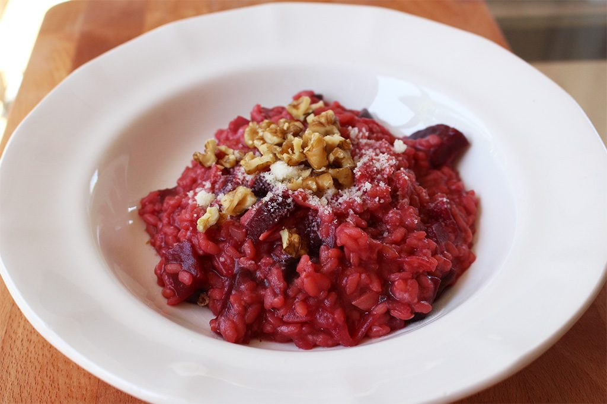

Risotto de remolacha

El risotto es uno de los platos más exitosos de la gastronomía italiana. Su consistencia es tan suave y cremosa que es difícil no sucumbir a sus encantos. De las varias recetas que he probado, mi favorita es, sin duda alguna, el risotto de remolacha. Tiene un sabor sorprendente y un color que lo hace irresistible.
Para que nuestro risotto de remolacha salga perfecto, es necesario dedicarle atención y tiempo ya que hay que removerlo durante los 20 o 30 minutos que tarda su cocción. Además de esto, es necesario utilizar arroz especial para risotto, como el carnaroli y el arborio. Ambos tienen la capacidad de absorber líquido y liberar almidón, imprescindibles para un resultado exitoso.
Ingredientes
- Cebolla (1)
- Aceite de oliva
- Vino blanco (100ml)
- Arroz arborio o carnaroli (300g)
- Remolacha cocida (2)
- Cald de pollo o verdura (1l aprox)
- Manteca (50g)
- Queso parmesano rallado (80g)
Como hacer risotto de remolacha
- Comenzamos nuestro risotto triturando la remolacha con ayuda de una batidora eléctrica o robot de cocina, hasta conseguir un puré homogéneo. Lo utilizaremos más adelante así que, de momento, lo reservamos.
- Pelamos la cebolla y la cortamos en brunoise fina. Cuanto más pequeña, mejor, para que los trozos de cebolla sean más pequeños que los granos de arroz. Calentamos un poco de aceite en una cacerola de base gruesa (que reparta bien el calor) y pochamos en el la cebolla, a fuego muy lento, hasta que esté transparente. Sazonamos.
- Mientras la cebolla se pocha, ponemos el caldo a calentar en una cacerola a parte. Agregamos el arroz a la cacerola y rehogamos un par de minutos, removiendo para que se impregne bien de aceite por todos lados. Incorporamos el vino blanco, subimos la intensidad del fuego y removemos de nuevo hasta que se evapore, unos dos minutos.
- Añadimos un cazo del caldo caliente y removemos hasta que el arroz lo absorba. Entonces agregamos otro cazo y repetimos la operación durante 10 minutos. El grano estará a medio cocer y es ahora cuando agregaremos el puré de remolacha. Removemos hasta que el grano absorba la humedad de la remolacha y continuamos añadiendo caldo y removiendo durante, aproximadamente, 20 minutos.
- El arroz ha de estar ligeramente caldoso y al dente, es decir, tierno por fuera, pero un poco duro por dentro. Alcanzado este punto, retiramos la cacerola del fuego, agregamos la mantequilla cortada en dados y el queso parmesano rallado, removemos hasta incorporar y servimos de inmediato.